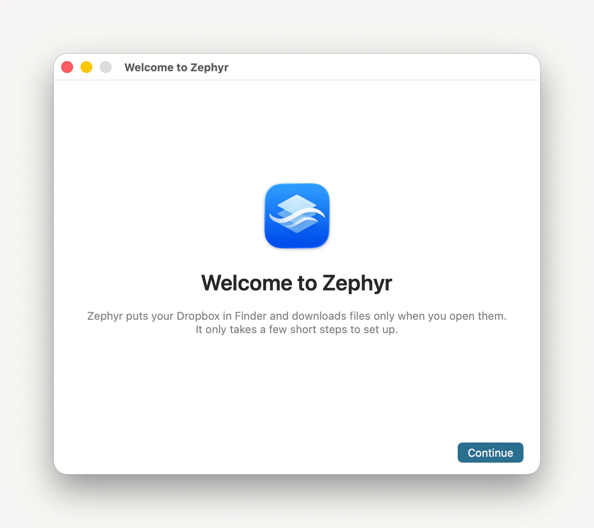

The first time you open Zephyr it puts up a window called Welcome to Zephyr and walks you through linking a Dropbox account and granting the three things only you can grant.

Read Welcome to Zephyr and What Zephyr Needs, clicking Continue after each.
On Link Your Dropbox Account, link an account.
You approve access on Dropbox’s own page, so your password never reaches Zephyr — see Link your Dropbox account. Nothing after this page can be done without it: macOS has no file provider to offer you until an account has given Zephyr one.
On Enable Zephyr in Finder, click Open System Settings, then turn on Zephyr under File Providers.
The page watches for it and reads Enabled. Your Dropbox is in Finder’s sidebar. once you have.
On Allow Notifications, click Allow Notifications and answer the macOS prompt.
macOS only ever asks once. If it has already taken an answer, the button reads Open Notifications and sends you to System Settings instead.
On Open Zephyr at Login, click Open at Login.
On Zephyr Is Ready, click Open in Finder to go straight to your files, then click Done.
Note: You can leave any of the three approvals for later — Continue is never blocked by one. Zephyr says which are still outstanding under Needs Attention in the menu-bar panel; see If Zephyr is waiting for your permission.
Click Zephyr in the menu bar, then click Manage Accounts…
Zephyr keeps no window open of its own, so its menus are only in the menu bar while one of them is in front.
Choose Help ▸ Zephyr Setup…
Setup opens at the first page again and undoes nothing. A page whose approval you have already granted says so rather than asking a second time.
In place of Enable Zephyr in Finder, setup may show Zephyr Is Running From a Copy. macOS is running Zephyr out of a temporary copy of its own, and it will not register a file provider for one — so there is no switch to find, and the rest of setup can’t land.
Click Download the Installer.
Quit Zephyr, open the installer package you downloaded, and follow it.
Open Zephyr again, and work through setup from the start.
This is the guided version of the fix in If your Dropbox doesn’t appear in Finder, which also covers clearing the flag by hand if you would rather not download Zephyr again.